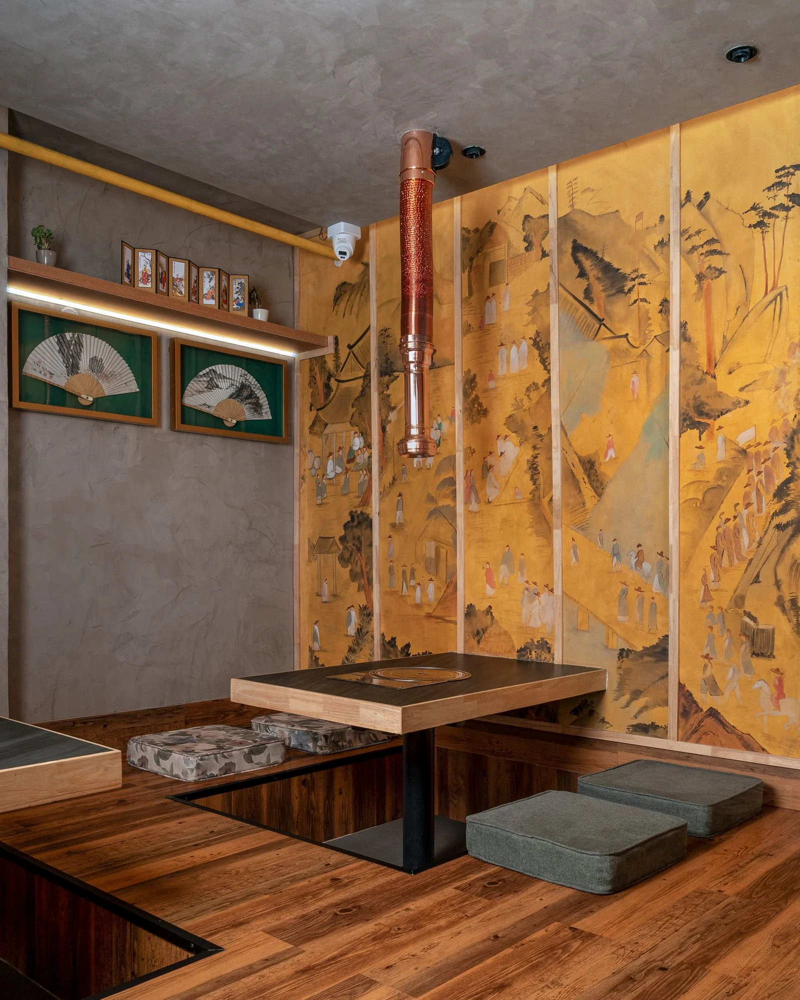

Korean restaurant / Saket, New Delhi
SEOUL
A 1,850 sq ft restaurant where communal Korean dining, table extraction, durable materials, and cultural storytelling shape one clear spatial system.
- Location
- MGF Metropolitan Mall, Saket
- Area
- 1,850 sq ft
- Type
- Korean restaurant
- Plan
- Communal dining and private rooms
- Design
- Urban Mistrii Studio
- Photo
- Yash R Jain

The brief
Make gathering work harder.
The restaurant needed to maximise seating and remain easy to maintain while still feeling rooted in the rituals of Korean dining.
Urban Mistrii organised the floor around large communal setups rather than couple seating. Six-seater booths and two private dining rooms support groups at different scales, while a compressed entrance was opened visually with a stretched ceiling membrane.
Extraction is integrated directly above the tables to manage smoke and oil from Korean barbecue cooking. Nonporous table slabs, Kota stone flooring, polished mango wood, textured walls, and painted narrative panels balance maintenance with warmth and cultural specificity.
Group dining, not leftover grouping.
Booths and private rooms are sized around shared meals, making communal use the organising principle rather than an afterthought.
Extraction becomes architecture.
Copper-finished table chimneys handle smoke and oil while remaining legible parts of the restaurant's visual rhythm.
Durability without sterility.
Kota stone, nonporous tables, timber, textured paint, and Korean artwork keep high-use surfaces practical without flattening the atmosphere.
Independent coverage